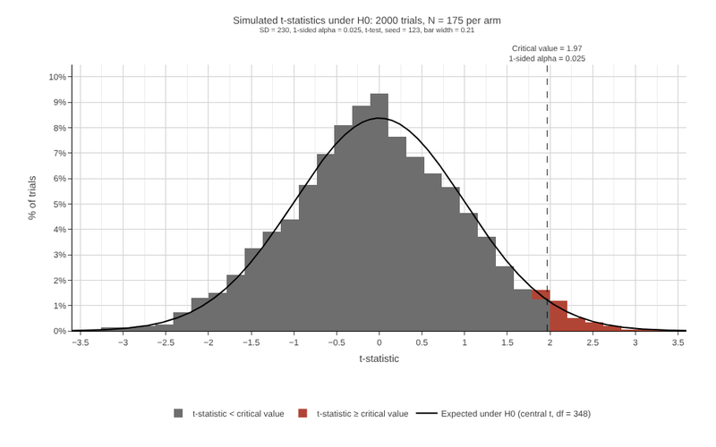
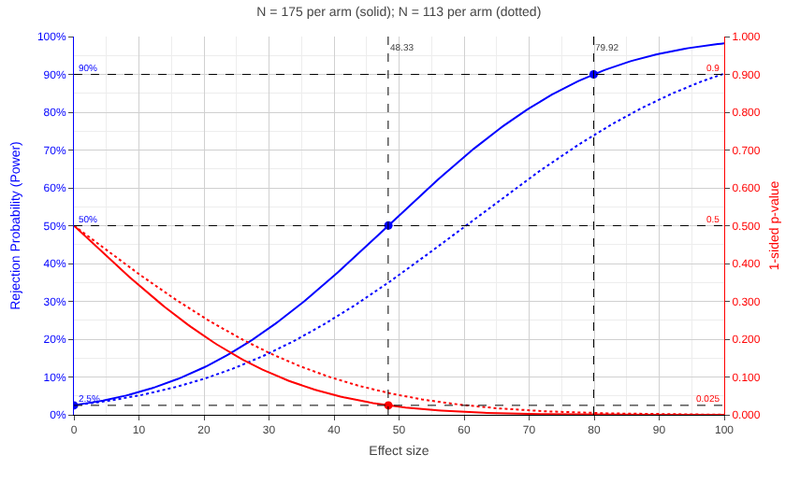
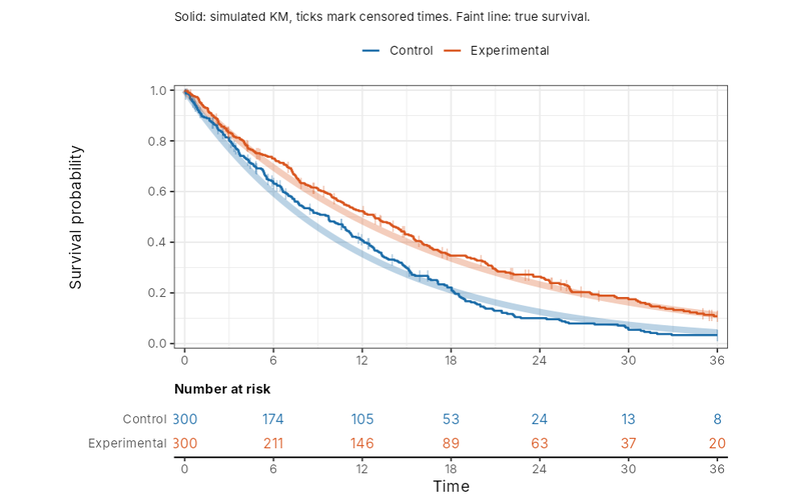
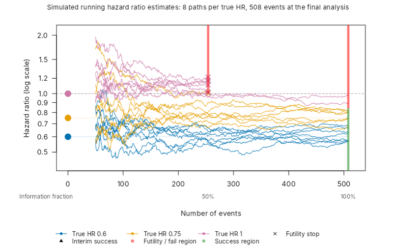
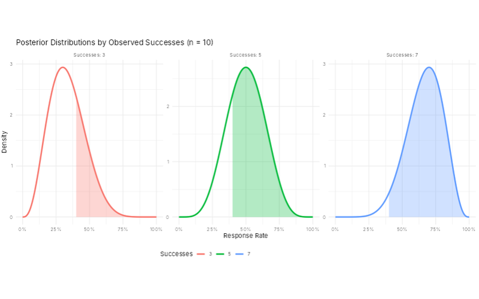

The apps

Long-run behaviour of the 1-sided test under H0 Simulate many trials with no true effect and see how often the test rejects.
Type I and II error (power) explorer Power, p-values, minimum detectable difference and the null and alternative distributions.
Proportional and non-proportional hazards Design hazards over time, simulate a two-arm trial and inspect the Kaplan-Meier curves.
Interim and futility analyses Group sequential designs: operating characteristics, stopping boundaries and futility rules.
Bayesian beta-binomial explorer Priors, posteriors and the probability of a response rate in a region of interest.